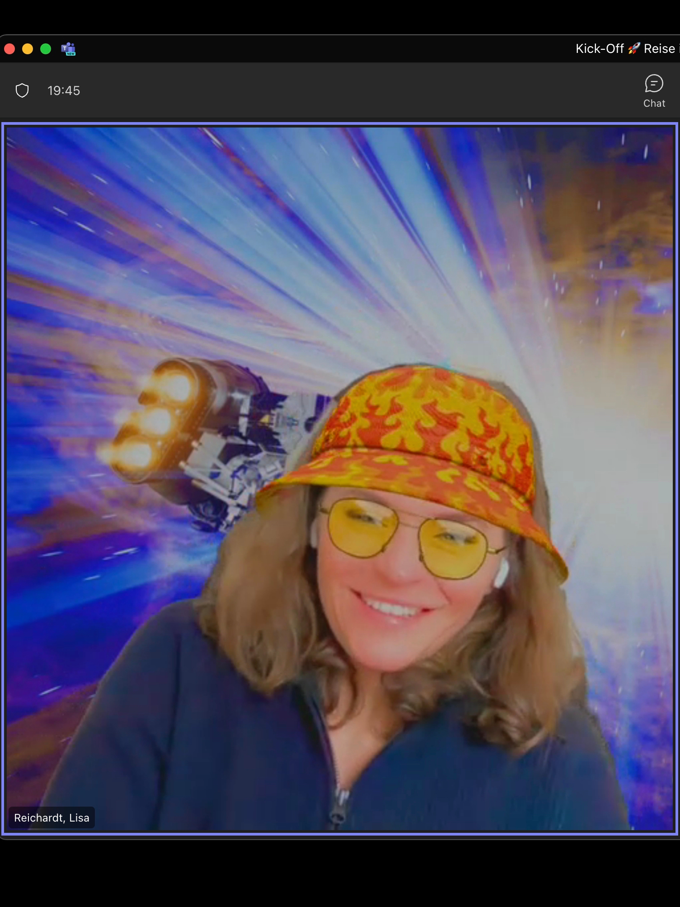
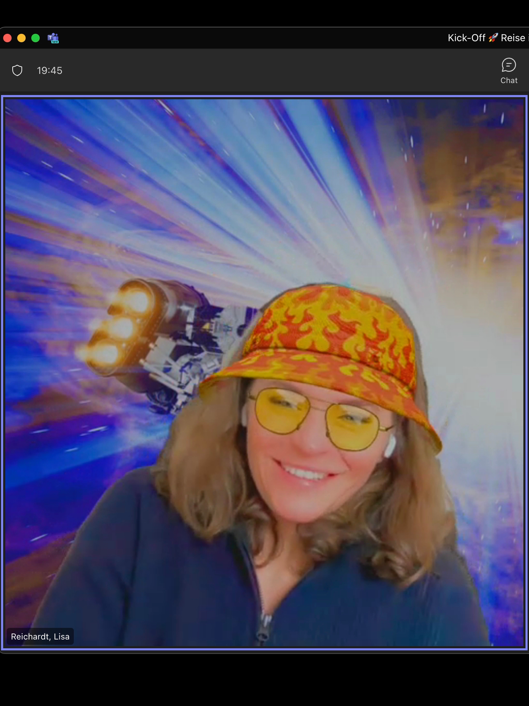

About Me
I am Lisa Reichardt, a senior UX/UI designer with 9+ years of experience. I am passionate about shaping digital products with an industrial design background. Currently I’m open to work.
Design does not emerge by chance; it is the result of careful observation, deep understanding, and critical questioning. Complexity motivates me, and I design with empathy for the user as well as a strong passion for design and technology. I particularly enjoy immersing myself deeply in new contexts in order to develop sustainable and value-creating solutions. I am a true team player, as ideas grow through changing perspectives, exchange, and collaborative thinking.
I successfully completed my Bachelor’s degree in Industrial Design (B.A.) at Muthesius University of Fine Arts and Design in Kiel in 2014. Since then, I have been especially interested in the digital side of design, which led me to pursue an additional Master’s degree in Interface Design. During my studies, I also completed a semester abroad in Austria at the University of Arts Linz and gained my first professional experience through an internship at Intuity Media Lab in Stuttgart.
Throughout my years of study, I received numerous awards, including the Bavarian State Prize for Emerging Designers and the James Dyson Award National in 2014, as well as the iF Design Talent Award in 2015 for my bachelor’s thesis. For my master’s thesis, I was awarded the Mia Seeger Preis in 2017.
Afterwards, I worked for seven years as a UX/UI Designer at HID Human Interface Design in Hamburg, where I gained extensive hands-on experience across all phases of interface and interaction design, including research, concept development, prototyping, design guidelines, and quality assurance. During this time, I worked on a wide range of projects, from large-scale product developments involving embedded systems to web and app applications, as well as pitch decks and case studies. Over time, I took on responsibility for several clients and also worked as a Lead Designer and Project Manager.
Following the closure of the HID agency, I joined Intuity Media Lab in 2023 and, together with several colleagues, founded a new location in Hamburg. There, I developed a comprehensive design system in Figma for the client Weinmann and led several extensive user testing initiatives. Since artificial intelligence has achieved a major breakthrough, my work has been strongly shaped by an exciting new think-tank culture focused on the symbiosis between design, humans, and AI.
However, my journey is far from over. I have now fulfilled my wish to return to my hometown of Kiel and am open to exciting digital challenges ahead.
Let’s connect.
 
